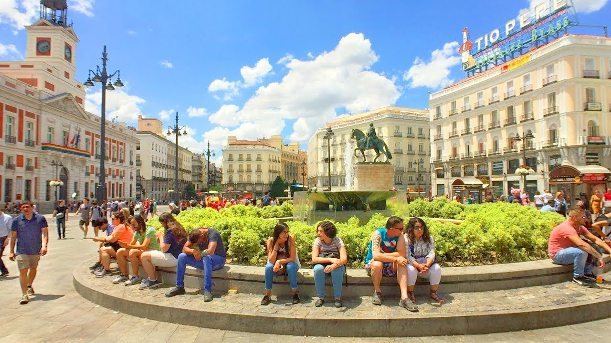
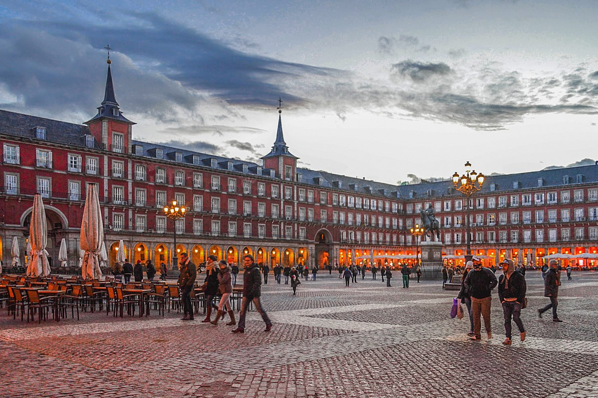
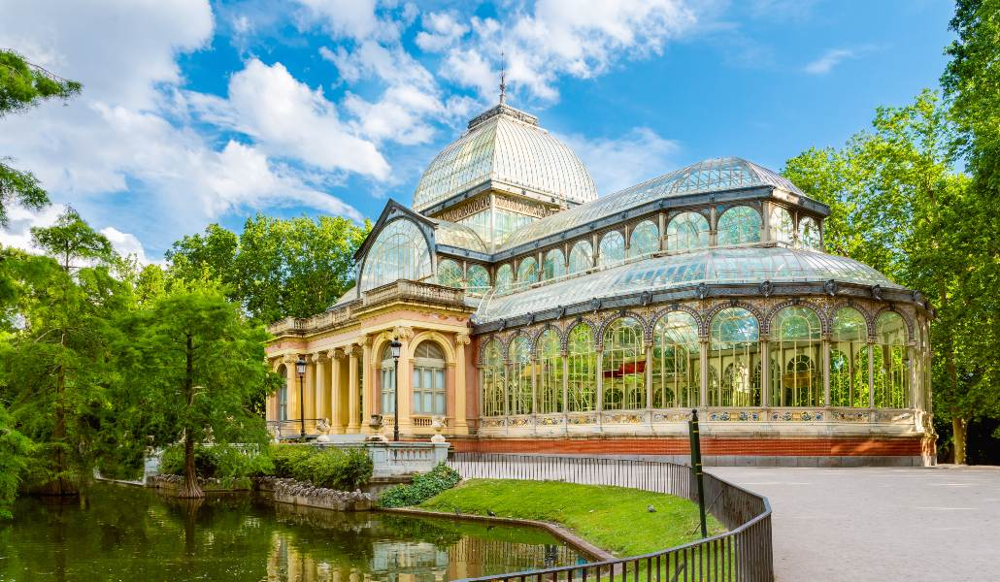
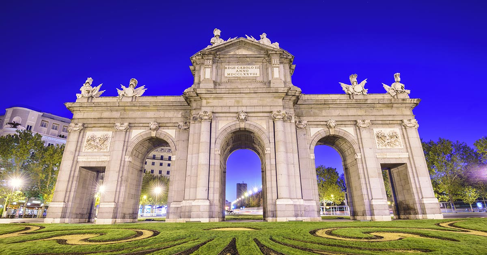

Museo del Prado

El Museo Nacional del Prado, desde que fue inaugurado en 1819 y a lo largo de su historia centenaria, ha cumplido con la alta misión de conservar, exponer y enriquecer el conjunto de las colecciones y obras de arte que, estrechamente vinculadas a la historia de España, constituyen una de las más elevadas manifestaciones de expresión artística de reconocido valor universal.
Puerta del Sol
Céntrica y bulliciosa, la plaza de la Puerta del Sol es uno de los emblemas de Madrid. Lugar de encuentro de madrileños y visita obligada para todos los turistas, en ella confluyen varias de las calles históricas y más transitadas de la ciudad, como Mayor, Arenal, Alcalá o Preciados. La plaza, de forma semicircular y peatonal desde agosto de 2020, concentra varios de los elementos más representativos de esta urbe.
Plaza Mayor
La Plaza Mayor empezó a cimentarse sobre el solar de la antigua Plaza del Arrabal, donde se encontraba el mercado más popular de la villa a finales del siglo XV, cuando se trasladó la corte de Felipe II a Madrid. En 1617 se encarga al arquitecto Juan Gómez de Mora establecer uniformidad a los edificios de este lugar, que durante siglos ha acogido festejos populares, corridas de toros, beatificaciones, coronaciones y también algún auto de fe.
El Retiro
Con 125 hectáreas y más de 15 000 árboles, el parque de El Retiro es un remanso verde en el centro de Madrid. Especial atención merecen algunos de sus jardines: el jardín de Vivaces, los jardines de Cecilio Rodríguez (jardines clasicistas con aires andaluces), los jardines del Arquitecto Herrero Palacios, la Rosaleda (colección de rosas) y el Parterre Francés con el ahuehuete, el árbol más antiguo de Madrid.
Palacio Real
El Palacio Real de Madrid es el más grande de Europa Occidental y uno de los más grandes del mundo. Sus más de 135 000 metros cuadrados y 3.418 habitaciones han sido testigos de siglos de la historia de España. Es una de las pocas residencias oficiales de Jefes de Estado que está abierta al público. Casi 2 millones de visitantes vienen cada año a descubrir sus rincones, sus obras de arte y sus tesoros únicos en el mundo.
Puerta de Alcalá
Situada en el centro de la Plaza de la Independencia, la Puerta de Alcalá es una de las cinco antiguas puertas reales que daban acceso a la ciudad, construida por mandato de Carlos III para sustituir otra anterior que databa del siglo XVI. Esta puerta monumental, inaugurada en 1778, se encuentra al lado del Parque del Retiro y en ella confluyen calles tan destacadas como Alcalá, Alfonso XII o Serrano, y constituye uno de los iconos turísticos de Madrid.